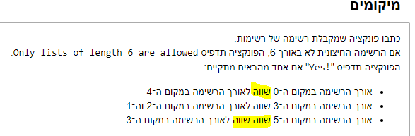

לגבי השאלה האחורנה בשיעור 7: בניתי את הפונקציה שבודקת רשימה של רשימות עד 6 איברים,
בסוף כתוב לכתוב 3 דוגמאות לכל אחת מסוגי ההדפסות, נראה לי שאני מפספס משהו בשאלה הזו, הדוגמאות זה לכתוב סוגים שונים של רשימות (של רשימות) שיכנסו כקלט בפונקציה?
תודה מראש!
orpazf
הדוגמאות הן אכן רשימות שיינתנו כקלט שעבורן יהיו 0, 1, 2, 3 הדפסות של Yes! - כתלות ברשימה יש בין 0 ל-3 רשימות. אתה צריך ליצור רשימות מכל סוג כזה
krauskas
תודה!
מסקרן אותי מה המטרה בתרגיל הזה? הוא מאוד שונה מהתרגילים שקיבלנו עד עכשיו ואפשר לומר שיש בו הרבה עבודה די סיזיפית, איזה עקרון תכנותי לומדים בו? הבנה טובה יותר של רשימות של רשימות?
Sahar
אני תוהה בכלל לגבי הניסוח של השאלה.
האם יש להם טעות הקלדה?
מה ההבדל בתנאי הראשון והשני שמבקשים “שווה” לתנאי השלישי שמבקש “שווה שווה”. יש איזה משהו מבחינה מינוחית של קוד שאני מפספסת?

orpazf
ים ענה בעבר שהשווה שווה זו טעות הגהה
2 לייקים
Gili
אז כמה דוגמאות צריך סך הכל? 12?
לייק 1
doriguy
@orpazf לתת דוגמה אחת לכל מצב של פלט?
דוגמה אחת לאפס הדפסות, דוג’ אחת להדפסה אחת, דוג’ אחת לשתי הדפסות ודוג’ אחת לשלוש הדפסות?
itamaraviv
אפשר לתת 4 דוגמאות אבל עדיף כמה שיותר כדי לוודא שהקוד עובד.
itamaraviv
היי,
המטרה שלו היא לתרגל אתכם בעבודה עם רשימה של רשימות לקראת הכרה של מבנים מורכבים יותר שיכולים להכיל משתנים (לדוגמה מילון שנלמד בעתיד).
אני לא חושב שהפתרון של התרגיל הזה נופל תחת הגדרה של סיזיפי, וודא שקראת והבנת אותו כמו שצריך.


{kind=link}